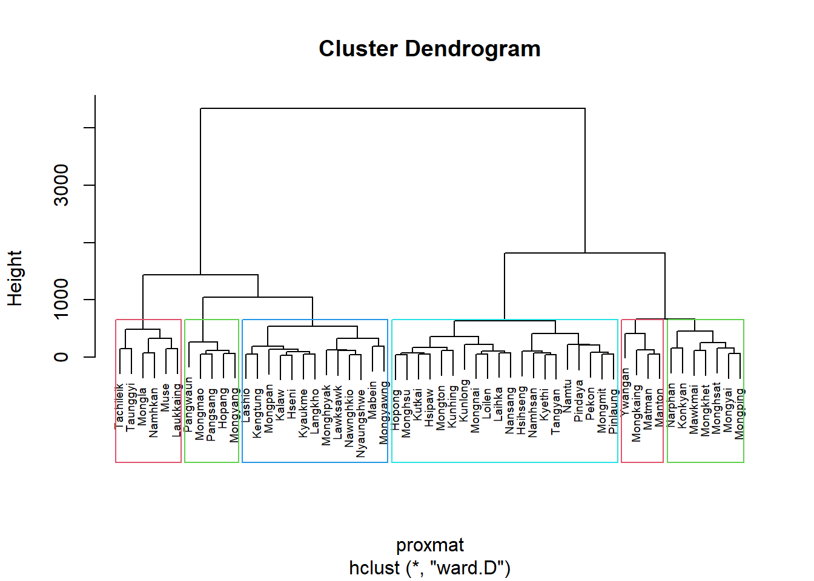

pacman::p_load(rgdal, spdep, tmap, sf, ClustGeo,
ggpubr, cluster, factoextra, NbClust,
heatmaply, corrplot, psych, tidyverse, GGally)Hands-on Exercise 7: Geographical Segmentation with Spatially Constrained Clustering Techniques
Overview
This hands-on exercise will focus on the application of clustering techniques to perform geographical segmentation. There are two major types of techniques:
- hierarchical cluster analysis; and
- spatially constrained cluster analysis.
It is a common practice to use clustering techniques to segment the market or planning area into different zones. In this exercise, we will try to delineate Shan State, Myanmar, into different zones based on multiple Information and Communication technology (ICT) measures, namely: Radio, Television, Land line phone, Mobile phone, Computer, and Internet at home.
Imports
Packages
The R packages needed for this exercise are as follows:
Spatial data handling
- sf, rgdal and spdep
Attribute data handling
- tidyverse, especially readr, ggplot2 and dplyr
Choropleth mapping
- tmap
Multivariate data visualisation and analysis
- coorplot, ggpubr, and heatmaply
Cluster analysis
cluster
ClustGeo
Data
Both data sets are download from Myanmar Information Management Unit (MIMU)
Aspatial Data
InfoComm variables extracted from The 2014 Myanmar Population and Housing Census Myanmar at the township level. The attribute data set is called ict. It is saved in R’s tibble data.frame format.
ict <- read_csv ("data/aspatial/Shan-ICT.csv")Geospatial Data
Myanmar township boundaries are downloaded from Myanmar Information Management Unit (MIMU). The geospatial data set is called myanmar_township_boundaries. It is saved in ESRI shapefile format.
shan_sf <- st_read(dsn = "data/geospatial",
layer = "myanmar_township_boundaries") %>%
filter(ST %in% c("Shan (East)", "Shan (North)", "Shan (South)")) %>%
select(c(2:7))Reading layer `myanmar_township_boundaries' from data source
`C:\SMU\Y3T2\IS415 Geospatial Analytics and Applications\IS415-GAA\Hands-on_Ex\Hands-on_Ex07\data\geospatial'
using driver `ESRI Shapefile'
Simple feature collection with 330 features and 14 fields
Geometry type: MULTIPOLYGON
Dimension: XY
Bounding box: xmin: 92.17275 ymin: 9.671252 xmax: 101.1699 ymax: 28.54554
Geodetic CRS: WGS 84Data Preparation
We will now derive new variables from the ict data set. Since the unit of measurements for each variables are the number of households, it creates bias towards townships with larger population. To mitigate this bias, we will derive new variables that are the proportion of households with Radio, Television, Land line phone, Mobile phone, Computer, and Internet at home.
The new variables are calculated per 1000 households. The new variables are named RADIO_PR, TV_PR, LLPHONE_PR, MPHONE_PR, COMPUTER_PR, and INTERNET_PR. The new variables are then renamed to more intuitive names. The derived data set is called ict_derived.
ict_derived <- ict %>%
mutate(`RADIO_PR` = `Radio`/`Total households`*1000) |>
mutate(`TV_PR` = `Television`/`Total households`*1000) |>
mutate(`LLPHONE_PR` = `Land line phone`/`Total households`*1000) |>
mutate(`MPHONE_PR` = `Mobile phone`/`Total households`*1000) |>
mutate(`COMPUTER_PR` = `Computer`/`Total households`*1000) |>
mutate(`INTERNET_PR` = `Internet at home`/`Total households`*1000) |>
rename(`DT_PCODE` =`District Pcode`,`DT`=`District Name`,
`TS_PCODE`=`Township Pcode`, `TS`=`Township Name`,
`TT_HOUSEHOLDS`=`Total households`,
`RADIO`=`Radio`, `TV`=`Television`,
`LLPHONE`=`Land line phone`, `MPHONE`=`Mobile phone`,
`COMPUTER`=`Computer`, `INTERNET`=`Internet at home`) Exploratory Data Analysis (EDA)
Statistical Graphics
Now we will conduct univariate analysis to understand the distribution of each variable. We will use histograms to visualise the distribution of each variable. We will use boxplots as well to detect if there are outliers.
Plot original variables
radio_hist <- ggplot(data=ict_derived,
aes(x= `RADIO`)) +
geom_histogram(bins=20,
color="black",
fill="light blue")
radio_box <- ggplot(data=ict_derived,
aes(x=`RADIO`)) +
geom_boxplot(color="black",
fill="light blue")
tv_hist <- ggplot(data=ict_derived,
aes(x= `TV`)) +
geom_histogram(bins=20,
color="black",
fill="light blue")
tv_box <- ggplot(data=ict_derived,
aes(x=`TV`)) +
geom_boxplot(color="black",
fill="light blue")
llphone_hist <- ggplot(data=ict_derived,
aes(x= `LLPHONE`)) +
geom_histogram(bins=20,
color="black",
fill="light blue")
llphone_box <- ggplot(data=ict_derived,
aes(x=`LLPHONE`)) +
geom_boxplot(color="black",
fill="light blue")
mphone_hist <- ggplot(data=ict_derived,
aes(x= `MPHONE`)) +
geom_histogram(bins=20,
color="black",
fill="light blue")
mphone_box <- ggplot(data=ict_derived,
aes(x=`MPHONE`)) +
geom_boxplot(color="black",
fill="light blue")
computer_hist <- ggplot(data=ict_derived,
aes(x= `COMPUTER`)) +
geom_histogram(bins=20,
color="black",
fill="light blue")
computer_box <- ggplot(data=ict_derived,
aes(x=`COMPUTER`)) +
geom_boxplot(color="black",
fill="light blue")
internet_hist <- ggplot(data=ict_derived,
aes(x= `INTERNET`)) +
geom_histogram(bins=20,
color="black",
fill="light blue")
internet_box <- ggplot(data=ict_derived,
aes(x=`INTERNET`)) +
geom_boxplot(color="black",
fill="light blue")
ggarrange(radio_hist, radio_box,
tv_hist, tv_box,
llphone_hist, llphone_box,
mphone_hist, mphone_box,
computer_hist, computer_box,
internet_hist, internet_box,
ncol = 2,
nrow = 6)As you can see, most of the variables are right-skewed. Luckily, we have addressed this issue in the previous section. Let’s now plot the newly derived variables.
Plot new variables
radio_hist <- ggplot(data=ict_derived,
aes(x= `RADIO_PR`)) +
geom_histogram(bins=20,
color="black",
fill="light blue")
radio_box <- ggplot(data=ict_derived,
aes(x=`RADIO_PR`)) +
geom_boxplot(color="black",
fill="light blue")
tv_hist <- ggplot(data=ict_derived,
aes(x= `TV_PR`)) +
geom_histogram(bins=20,
color="black",
fill="light blue")
tv_box <- ggplot(data=ict_derived,
aes(x=`TV_PR`)) +
geom_boxplot(color="black",
fill="light blue")
llphone_hist <- ggplot(data=ict_derived,
aes(x= `LLPHONE_PR`)) +
geom_histogram(bins=20,
color="black",
fill="light blue")
llphone_box <- ggplot(data=ict_derived,
aes(x=`LLPHONE_PR`)) +
geom_boxplot(color="black",
fill="light blue")
mphone_hist <- ggplot(data=ict_derived,
aes(x= `MPHONE_PR`)) +
geom_histogram(bins=20,
color="black",
fill="light blue")
mphone_box <- ggplot(data=ict_derived,
aes(x=`MPHONE_PR`)) +
geom_boxplot(color="black",
fill="light blue")
computer_hist <- ggplot(data=ict_derived,
aes(x= `COMPUTER_PR`)) +
geom_histogram(bins=20,
color="black",
fill="light blue")
computer_box <- ggplot(data=ict_derived,
aes(x=`COMPUTER_PR`)) +
geom_boxplot(color="black",
fill="light blue")
internet_hist <- ggplot(data=ict_derived,
aes(x= `INTERNET_PR`)) +
geom_histogram(bins=20,
color="black",
fill="light blue")
internet_box <- ggplot(data=ict_derived,
aes(x=`INTERNET_PR`)) +
geom_boxplot(color="black",
fill="light blue")
ggarrange(radio_hist, radio_box,
tv_hist, tv_box,
llphone_hist, llphone_box,
mphone_hist, mphone_box,
computer_hist, computer_box,
internet_hist, internet_box,
ncol = 2,
nrow = 6)Choropleth
Joinning geospatial data with aspatial data
Before we can proceed with the choropleth mapping, we need to join the geospatial data with the aspatial data. We will use the left_join function from the dplyr package to join the two data sets. The join key is the township code. The joined data set is called shan_sf.
shan_sf <- left_join(shan_sf,
ict_derived, by=c("TS_PCODE"="TS_PCODE"))
write_rds(shan_sf, "data/rds/shan_sf.rds")Choropleth Mapping
qtm(shan_sf, "RADIO_PR")
In order to reveal the distribution shown in the choropleth map above are bias to the underlying total number of households at the townships, we will create two choropleth maps, one for the total number of households (i.e. TT_HOUSEHOLDS.map) and one for the total number of household with Radio (RADIO.map) by using the code chunk below.
TT_HOUSEHOLDS.map <- tm_shape(shan_sf) +
tm_fill(col = "TT_HOUSEHOLDS",
n = 5,
style = "jenks",
title = "Total households") +
tm_borders(alpha = 0.5)
RADIO.map <- tm_shape(shan_sf) +
tm_fill(col = "RADIO",
n = 5,
style = "jenks",
title = "Number Radio ") +
tm_borders(alpha = 0.5)
tmap_arrange(TT_HOUSEHOLDS.map, RADIO.map,
asp=NA, ncol=2)
Notice that the choropleth maps above clearly show that townships with relatively larger number ot households are also showing relatively higher number of radio ownership.
Now let us plot the choropleth maps showing the dsitribution of total number of households and Radio penetration rate by using the code chunk below.
tm_shape(shan_sf) +
tm_polygons(c("TT_HOUSEHOLDS", "RADIO_PR"),
style="jenks") +
tm_facets(sync = TRUE, ncol = 2) +
tm_legend(legend.position = c("right", "bottom"))+
tm_layout(outer.margins=0, asp=0)
Correlation Analysis
Before we perform cluster analysis, it is important for us to ensure that the cluster variables are not highly correlated.
In this section, you will learn how to use corrplot.mixed() function of corrplot package to visualise and analyse the correlation of the input variables.
cluster_vars.cor = cor(ict_derived[,12:17])
corrplot.mixed(cluster_vars.cor,
lower = "ellipse",
upper = "number",
tl.pos = "lt",
diag = "l",
tl.col = "black")
The correlation plot above shows that COMPUTER_PR and INTERNET_PR are highly correlated. This suggest that only one of them should be used in the cluster analysis instead of both.
Hierarchy Cluster Analysis
In this section, we will perform hierarchical cluster analysis to segment the townships in Shan State into different zones based on the derived ICT measures. The analysis consists of four major steps:
Extracting clustering variables
cluster_vars <- shan_sf %>%
st_set_geometry(NULL) %>%
select("TS.x", "RADIO_PR", "TV_PR", "LLPHONE_PR", "MPHONE_PR", "COMPUTER_PR")
head(cluster_vars,10) TS.x RADIO_PR TV_PR LLPHONE_PR MPHONE_PR COMPUTER_PR
1 Mongmit 286.1852 554.1313 35.30618 260.6944 12.15939
2 Pindaya 417.4647 505.1300 19.83584 162.3917 12.88190
3 Ywangan 484.5215 260.5734 11.93591 120.2856 4.41465
4 Pinlaung 231.6499 541.7189 28.54454 249.4903 13.76255
5 Mabein 449.4903 708.6423 72.75255 392.6089 16.45042
6 Kalaw 280.7624 611.6204 42.06478 408.7951 29.63160
7 Pekon 318.6118 535.8494 39.83270 214.8476 18.97032
8 Lawksawk 387.1017 630.0035 31.51366 320.5686 21.76677
9 Nawnghkio 349.3359 547.9456 38.44960 323.0201 15.76465
10 Kyaukme 210.9548 601.1773 39.58267 372.4930 30.94709Notice that the final clustering variables list does not include variable INTERNET_PR because it is highly correlated with variable COMPUTER_PR.
Next, we need to change the rows by township name instead of row number by using the code chunk below
row.names(cluster_vars) <- cluster_vars$"TS.x"
head(cluster_vars,10) TS.x RADIO_PR TV_PR LLPHONE_PR MPHONE_PR COMPUTER_PR
Mongmit Mongmit 286.1852 554.1313 35.30618 260.6944 12.15939
Pindaya Pindaya 417.4647 505.1300 19.83584 162.3917 12.88190
Ywangan Ywangan 484.5215 260.5734 11.93591 120.2856 4.41465
Pinlaung Pinlaung 231.6499 541.7189 28.54454 249.4903 13.76255
Mabein Mabein 449.4903 708.6423 72.75255 392.6089 16.45042
Kalaw Kalaw 280.7624 611.6204 42.06478 408.7951 29.63160
Pekon Pekon 318.6118 535.8494 39.83270 214.8476 18.97032
Lawksawk Lawksawk 387.1017 630.0035 31.51366 320.5686 21.76677
Nawnghkio Nawnghkio 349.3359 547.9456 38.44960 323.0201 15.76465
Kyaukme Kyaukme 210.9548 601.1773 39.58267 372.4930 30.94709Notice that the row number has been replaced into the township name.
Now, we will delete the TS.x field by using the code chunk below.
shan_ict <- select(cluster_vars, c(2:6))
head(shan_ict, 10) RADIO_PR TV_PR LLPHONE_PR MPHONE_PR COMPUTER_PR
Mongmit 286.1852 554.1313 35.30618 260.6944 12.15939
Pindaya 417.4647 505.1300 19.83584 162.3917 12.88190
Ywangan 484.5215 260.5734 11.93591 120.2856 4.41465
Pinlaung 231.6499 541.7189 28.54454 249.4903 13.76255
Mabein 449.4903 708.6423 72.75255 392.6089 16.45042
Kalaw 280.7624 611.6204 42.06478 408.7951 29.63160
Pekon 318.6118 535.8494 39.83270 214.8476 18.97032
Lawksawk 387.1017 630.0035 31.51366 320.5686 21.76677
Nawnghkio 349.3359 547.9456 38.44960 323.0201 15.76465
Kyaukme 210.9548 601.1773 39.58267 372.4930 30.94709Data Standardisation
In general, multiple variables will be used in cluster analysis. It is not unusual their values range are different. In order to avoid the cluster analysis result is baised to clustering variables with large values, it is useful to standardise the input variables before performing cluster analysis.
Min-Max standardisation
In the code chunk below, normalize() of heatmaply package is used to stadardisation the clustering variables by using Min-Max method. The summary() is then used to display the summary statistics of the standardised clustering variables.
shan_ict.std <- normalize(shan_ict)
summary(shan_ict.std) RADIO_PR TV_PR LLPHONE_PR MPHONE_PR
Min. :0.0000 Min. :0.0000 Min. :0.0000 Min. :0.0000
1st Qu.:0.2544 1st Qu.:0.4600 1st Qu.:0.1123 1st Qu.:0.2199
Median :0.4097 Median :0.5523 Median :0.1948 Median :0.3846
Mean :0.4199 Mean :0.5416 Mean :0.2703 Mean :0.3972
3rd Qu.:0.5330 3rd Qu.:0.6750 3rd Qu.:0.3746 3rd Qu.:0.5608
Max. :1.0000 Max. :1.0000 Max. :1.0000 Max. :1.0000
COMPUTER_PR
Min. :0.00000
1st Qu.:0.09598
Median :0.17607
Mean :0.23692
3rd Qu.:0.29868
Max. :1.00000 Notice that the values range of the Min-max standardised clustering variables are 0-1 now.
Z-score standardisation
Z-score standardisation can be performed easily by using scale() of Base R. The code chunk below will be used to stadardisation the clustering variables by using Z-score method.
shan_ict.z <- scale(shan_ict)
describe(shan_ict.z) vars n mean sd median trimmed mad min max range skew kurtosis
RADIO_PR 1 55 0 1 -0.04 -0.06 0.94 -1.85 2.55 4.40 0.48 -0.27
TV_PR 2 55 0 1 0.05 0.04 0.78 -2.47 2.09 4.56 -0.38 -0.23
LLPHONE_PR 3 55 0 1 -0.33 -0.15 0.68 -1.19 3.20 4.39 1.37 1.49
MPHONE_PR 4 55 0 1 -0.05 -0.06 1.01 -1.58 2.40 3.98 0.48 -0.34
COMPUTER_PR 5 55 0 1 -0.26 -0.18 0.64 -1.03 3.31 4.34 1.80 2.96
se
RADIO_PR 0.13
TV_PR 0.13
LLPHONE_PR 0.13
MPHONE_PR 0.13
COMPUTER_PR 0.13Notice the mean and standard deviation of the Z-score standardised clustering variables are 0 and 1 respectively.
Note: describe() of psych package is used here instead of summary() of Base R because the earlier provides standard deviation.
Warning: Z-score standardisation method should only be used if we would assume all variables come from some normal distribution.
Visualising the standardised clustering variables
Beside reviewing the summary statistics of the standardised clustering variables, it is also a good practice to visualise their distribution graphical.
The code chunk below plot the scaled Radio_PR field.
r <- ggplot(data=ict_derived,
aes(x= `RADIO_PR`)) +
geom_histogram(bins=20,
color="black",
fill="light blue") +
ggtitle("Raw values without standardisation")
shan_ict_s_df <- as.data.frame(shan_ict.std)
s <- ggplot(data=shan_ict_s_df,
aes(x=`RADIO_PR`)) +
geom_histogram(bins=20,
color="black",
fill="light blue") +
ggtitle("Min-Max Standardisation")
shan_ict_z_df <- as.data.frame(shan_ict.z)
z <- ggplot(data=shan_ict_z_df,
aes(x=`RADIO_PR`)) +
geom_histogram(bins=20,
color="black",
fill="light blue") +
ggtitle("Z-score Standardisation")
ggarrange(r, s, z,
ncol = 3,
nrow = 1)
It looks like RADIO_PR is already normally distributed.
r <- ggplot(data=ict_derived,
aes(x= `RADIO_PR`)) +
geom_density(color="black",
fill="light blue") +
ggtitle("Raw values without standardisation")
shan_ict_s_df <- as.data.frame(shan_ict.std)
s <- ggplot(data=shan_ict_s_df,
aes(x=`RADIO_PR`)) +
geom_density(color="black",
fill="light blue") +
ggtitle("Min-Max Standardisation")
shan_ict_z_df <- as.data.frame(shan_ict.z)
z <- ggplot(data=shan_ict_z_df,
aes(x=`RADIO_PR`)) +
geom_density(color="black",
fill="light blue") +
ggtitle("Z-score Standardisation")
ggarrange(r, s, z,
ncol = 3,
nrow = 1)Computing proximity matrix
In R, many packages provide functions to calculate distance matrix. We will compute the proximity matrix by using dist() of R.
dist() supports six distance proximity calculations, they are: euclidean, maximum, manhattan, canberra, binary and minkowski. The default is euclidean proximity matrix.
The code chunk below is used to compute the proximity matrix using euclidean method.
proxmat <- dist(shan_ict, method = 'euclidean')The code chunk below can then be used to list the content of proxmat for visual inspection.
proxmatComputing hierarchical clustering
In R, there are several packages provide hierarchical clustering function. In this hands-on exercise, hclust() of R stats will be used.
hclust() employed agglomeration method to compute the cluster. Eight clustering algorithms are supported, they are: ward.D, ward.D2, single, complete, average(UPGMA), mcquitty(WPGMA), median(WPGMC) and centroid(UPGMC).
The code chunk below performs hierarchical cluster analysis using ward.D method. The hierarchical clustering output is stored in an object of class hclust which describes the tree produced by the clustering process.
hclust_ward <- hclust(proxmat, method = 'ward.D')We can then plot the tree by using plot() of R Graphics as shown in the code chunk below.
plot(hclust_ward, cex = 0.6)
Selecting the optimal clustering algorithm
One of the challenge in performing hierarchical clustering is to identify stronger clustering structures. The issue can be solved by using use agnes() function of cluster package. It functions like hclus(), however, with the agnes() function you can also get the agglomerative coefficient, which measures the amount of clustering structure found (values closer to 1 suggest strong clustering structure).
The code chunk below will be used to compute the agglomerative coefficients of all hierarchical clustering algorithms.
m <- c( "average", "single", "complete", "ward")
names(m) <- c( "average", "single", "complete", "ward")
ac <- function(x) {
agnes(shan_ict, method = x)$ac
}
map_dbl(m, ac) average single complete ward
0.8131144 0.6628705 0.8950702 0.9427730 With reference to the output above, we can see that Ward’s method provides the strongest clustering structure among the four methods assessed. Hence, in the subsequent analysis, only Ward’s method will be used.
Determining Optimal Clusters
Another technical challenge face by data analyst in performing clustering analysis is to determine the optimal clusters to retain.
There are three commonly used methods to determine the optimal clusters, they are:
12.7.9.1 Gap Statistic Method
The gap statistic compares the total within intra-cluster variation for different values of k with their expected values under null reference distribution of the data. The estimate of the optimal clusters will be value that maximize the gap statistic (i.e., that yields the largest gap statistic). This means that the clustering structure is far away from the random uniform distribution of points.
To compute the gap statistic, clusGap() of cluster package will be used.
set.seed(12345)
gap_stat <- clusGap(shan_ict,
FUN = hcut,
nstart = 25,
K.max = 10,
B = 50)
# Print the result
print(gap_stat, method = "firstmax")Clustering Gap statistic ["clusGap"] from call:
clusGap(x = shan_ict, FUNcluster = hcut, K.max = 10, B = 50, nstart = 25)
B=50 simulated reference sets, k = 1..10; spaceH0="scaledPCA"
--> Number of clusters (method 'firstmax'): 1
logW E.logW gap SE.sim
[1,] 8.407129 8.680794 0.2736651 0.04460994
[2,] 8.130029 8.350712 0.2206824 0.03880130
[3,] 7.992265 8.202550 0.2102844 0.03362652
[4,] 7.862224 8.080655 0.2184311 0.03784781
[5,] 7.756461 7.978022 0.2215615 0.03897071
[6,] 7.665594 7.887777 0.2221833 0.03973087
[7,] 7.590919 7.806333 0.2154145 0.04054939
[8,] 7.526680 7.731619 0.2049390 0.04198644
[9,] 7.458024 7.660795 0.2027705 0.04421874
[10,] 7.377412 7.593858 0.2164465 0.04540947Also note that the hcut function used is from factoextra package.
Next, we can visualise the plot by using fviz_gap_stat() of factoextra package.
fviz_gap_stat(gap_stat)
With reference to the gap statistic graph above, the recommended number of cluster to retain is 1. However, it is not logical to retain only one cluster. By examine the gap statistic graph, the 6-cluster gives the largest gap statistic and should be the next best cluster to pick.
Note: In addition to these commonly used approaches, the NbClust package, published by Charrad et al., 2014, provides 30 indices for determining the relevant number of clusters and proposes to users the best clustering scheme from the different results obtained by varying all combinations of number of clusters, distance measures, and clustering methods.
Interpreting the dendrograms
In the dendrogram displayed above, each leaf corresponds to one observation. As we move up the tree, observations that are similar to each other are combined into branches, which are themselves fused at a higher height.
The height of the fusion, provided on the vertical axis, indicates the (dis)similarity between two observations. The higher the height of the fusion, the less similar the observations are. Note that, conclusions about the proximity of two observations can be drawn only based on the height where branches containing those two observations first are fused. We cannot use the proximity of two observations along the horizontal axis as a criteria of their similarity.
It’s also possible to draw the dendrogram with a border around the selected clusters by using rect.hclust() of R stats. The argument border is used to specify the border colors for the rectangles.
plot(hclust_ward, cex = 0.6)
rect.hclust(hclust_ward,
k = 6,
border = 2:5)
Visually-driven hierarchical clustering analysis
In this section, we will learn how to perform visually-driven hiearchical clustering analysis by using heatmaply package.
With heatmaply, we are able to build both highly interactive cluster heatmap or static cluster heatmap.
Transforming the data frame into a matrix
The data was loaded into a data frame, but it has to be a data matrix to make your heatmap.
The code chunk below will be used to transform shan_ict data frame into a data matrix.
shan_ict_mat <- data.matrix(shan_ict)Plotting interactive cluster heatmap using heatmaply()
In the code chunk below, the heatmaply() of heatmaply package is used to build an interactive cluster heatmap.
heatmaply(normalize(shan_ict_mat),
Colv=NA,
dist_method = "euclidean",
hclust_method = "ward.D",
seriate = "OLO",
colors = Blues,
k_row = 6,
margins = c(NA,200,60,NA),
fontsize_row = 4,
fontsize_col = 5,
main="Geographic Segmentation of Shan State by ICT indicators",
xlab = "ICT Indicators",
ylab = "Townships of Shan State"
)Mapping the clusters formed
With closed examination of the dendragram above, we have decided to retain six clusters.
cutree() of R Base will be used in the code chunk below to derive a 6-cluster model.
groups <- as.factor(cutree(hclust_ward, k=6))The output is called groups. It is a list object.
In order to visualise the clusters, the groups object need to be appended onto shan_sf simple feature object.
The code chunk below form the join in three steps:
the groups list object will be converted into a matrix;
cbind() is used to append groups matrix onto shan_sf to produce an output simple feature object called
shan_sf_cluster; andrename of dplyr package is used to rename as.matrix.groups field as CLUSTER.
shan_sf_cluster <- cbind(shan_sf, as.matrix(groups)) %>%
rename(`CLUSTER`=`as.matrix.groups.`)Next, qtm() of tmap package is used to plot the choropleth map showing the cluster formed.
qtm(shan_sf_cluster, "CLUSTER")
The choropleth map above reveals the clusters are very fragmented. The is one of the major limitation when non-spatial clustering algorithm such as hierarchical cluster analysis method is used.
Spatially Constrained Clustering: SKATER approach
In this section, you will learn how to derive spatially constrained cluster by using skater() method of spdep package.
Converting into SpatialPolygonsDataFrame
First, we need to convert shan_sf into SpatialPolygonsDataFrame. This is because SKATER function only support sp objects such as SpatialPolygonDataFrame.
The code chunk below uses as_Spatial() of sf package to convert shan_sf into a SpatialPolygonDataFrame called shan_sp.
shan_sp <- as_Spatial(shan_sf)Computing Neighbour List
Next, poly2nd() of spdep package will be used to compute the neighbours list from polygon list.
shan.nb <- poly2nb(shan_sp)
summary(shan.nb)Neighbour list object:
Number of regions: 55
Number of nonzero links: 264
Percentage nonzero weights: 8.727273
Average number of links: 4.8
Link number distribution:
2 3 4 5 6 7 8 9
5 9 7 21 4 3 5 1
5 least connected regions:
3 5 7 9 47 with 2 links
1 most connected region:
8 with 9 linksWe can plot the neighbours list on shan_sp by using the code chunk below. Since we now can plot the community area boundaries as well, we plot this graph on top of the map. The first plot command gives the boundaries. This is followed by the plot of the neighbor list object, with coordinates applied to the original SpatialPolygonDataFrame (Shan state township boundaries) to extract the centroids of the polygons. These are used as the nodes for the graph representation. We also set the color to blue and specify add=TRUE to plot the network on top of the boundaries.
plot(shan_sp,
border=grey(0.5))
plot(shan.nb,
coordinates(shan_sp),
col="blue",
add=TRUE)Note that if you plot the network first and then the boundaries, some of the areas will be clipped. This is because the plotting area is determined by the characteristics of the first plot. In this example, because the boundary map extends further than the graph, we plot it first.
Computing minimum spanning tree
Calculating edge costs
Next, nbcosts() of spdep package is used to compute the cost of each edge. It is the distance between it nodes. This function compute this distance using a data.frame with observations vector in each node.
The code chunk below is used to compute the cost of each edge.
lcosts <- nbcosts(shan.nb, shan_ict)For each observation, this gives the pairwise dissimilarity between its values on the five variables and the values for the neighbouring observation (from the neighbour list). Basically, this is the notion of a generalised weight for a spatial weights matrix.
Next, We will incorporate these costs into a weights object in the same way as we did in the calculation of inverse of distance weights. In other words, we convert the neighbour list to a list weights object by specifying the just computed lcosts as the weights.
In order to achieve this, nb2listw() of spdep package is used as shown in the code chunk below.
Note that we specify the style as B to make sure the cost values are not row-standardized.
shan.w <- nb2listw(shan.nb,
lcosts,
style="B")
summary(shan.w)Characteristics of weights list object:
Neighbour list object:
Number of regions: 55
Number of nonzero links: 264
Percentage nonzero weights: 8.727273
Average number of links: 4.8
Link number distribution:
2 3 4 5 6 7 8 9
5 9 7 21 4 3 5 1
5 least connected regions:
3 5 7 9 47 with 2 links
1 most connected region:
8 with 9 links
Weights style: B
Weights constants summary:
n nn S0 S1 S2
B 55 3025 76267.65 58260785 522016004Computing minimum spanning tree
The minimum spanning tree is computed by mean of the mstree() of spdep package as shown in the code chunk below.
shan.mst <- mstree(shan.w)After computing the MST, we can check its class and dimension by using the code chunk below.
class(shan.mst)[1] "mst" "matrix"dim(shan.mst)[1] 54 3Note that the dimension is 54 and not 55. This is because the minimum spanning tree consists on n-1 edges (links) in order to traverse all the nodes.
We can display the content of shan.mst by using head() as shown in the code chunk below.
head(shan.mst) [,1] [,2] [,3]
[1,] 54 48 47.79331
[2,] 54 17 109.08506
[3,] 54 45 127.42203
[4,] 45 52 146.78891
[5,] 52 13 110.55197
[6,] 13 28 92.79567The plot method for the MST include a way to show the observation numbers of the nodes in addition to the edge. As before, we plot this together with the township boundaries. We can see how the initial neighbor list is simplified to just one edge connecting each of the nodes, while passing through all the nodes.
plot(shan_sp, border=gray(.5))
plot.mst(shan.mst,
coordinates(shan_sp),
col="blue",
cex.lab=0.7,
cex.circles=0.005,
add=TRUE)Computing spatially constrained clusters using SKATER method
The code chunk below compute the spatially constrained cluster using skater() of spdep package.
clust6 <- spdep::skater(edges = shan.mst[,1:2],
data = shan_ict,
method = "euclidean",
ncuts = 5)The skater() takes three mandatory arguments: - the first two columns of the MST matrix (i.e. not the cost), - the data matrix (to update the costs as units are being grouped), and - the number of cuts. Note: It is set to one less than the number of clusters. So, the value specified is not the number of clusters, but the number of cuts in the graph, one less than the number of clusters.
The result of the skater() is an object of class skater. We can examine its contents by using the code chunk below.
str(clust6)List of 8
$ groups : num [1:55] 3 3 6 3 3 3 3 3 3 3 ...
$ edges.groups:List of 6
..$ :List of 3
.. ..$ node: num [1:22] 13 48 54 55 45 37 34 16 25 52 ...
.. ..$ edge: num [1:21, 1:3] 48 55 54 37 34 16 45 25 13 13 ...
.. ..$ ssw : num 3423
..$ :List of 3
.. ..$ node: num [1:18] 47 27 53 38 42 15 41 51 43 32 ...
.. ..$ edge: num [1:17, 1:3] 53 15 42 38 41 51 15 27 15 43 ...
.. ..$ ssw : num 3759
..$ :List of 3
.. ..$ node: num [1:11] 2 6 8 1 36 4 10 9 46 5 ...
.. ..$ edge: num [1:10, 1:3] 6 1 8 36 4 6 8 10 10 9 ...
.. ..$ ssw : num 1458
..$ :List of 3
.. ..$ node: num [1:2] 44 20
.. ..$ edge: num [1, 1:3] 44 20 95
.. ..$ ssw : num 95
..$ :List of 3
.. ..$ node: num 23
.. ..$ edge: num[0 , 1:3]
.. ..$ ssw : num 0
..$ :List of 3
.. ..$ node: num 3
.. ..$ edge: num[0 , 1:3]
.. ..$ ssw : num 0
$ not.prune : NULL
$ candidates : int [1:6] 1 2 3 4 5 6
$ ssto : num 12613
$ ssw : num [1:6] 12613 10977 9962 9540 9123 ...
$ crit : num [1:2] 1 Inf
$ vec.crit : num [1:55] 1 1 1 1 1 1 1 1 1 1 ...
- attr(*, "class")= chr "skater"The most interesting component of this list structure is the groups vector containing the labels of the cluster to which each observation belongs (as before, the label itself is arbitary). This is followed by a detailed summary for each of the clusters in the edges.groups list. Sum of squares measures are given as ssto for the total and ssw to show the effect of each of the cuts on the overall criterion.
We can check the cluster assignment by using the conde chunk below.
ccs6 <- clust6$groups
ccs6 [1] 3 3 6 3 3 3 3 3 3 3 2 1 1 1 2 1 1 1 2 4 1 2 5 1 1 1 2 1 2 2 1 2 2 1 1 3 1 2
[39] 2 2 2 2 2 4 1 3 2 1 1 1 2 1 2 1 1We can find out how many observations are in each cluster by means of the table command. Parenthetially, we can also find this as the dimension of each vector in the lists contained in edges.groups. For example, the first list has node with dimension 12, which is also the number of observations in the first cluster.
table(ccs6)ccs6
1 2 3 4 5 6
22 18 11 2 1 1 Lastly, we can also plot the pruned tree that shows the five clusters on top of the townshop area.
plot(shan_sp, border=gray(.5))
plot(clust6,
coordinates(shan_sp),
cex.lab=.7,
groups.colors=c("red","green","blue", "brown", "pink"),
cex.circles=0.005,
add=TRUE)Visualising the clusters in choropleth map
The code chunk below is used to plot the newly derived clusters by using SKATER method.
groups_mat <- as.matrix(clust6$groups)
shan_sf_spatialcluster <- cbind(shan_sf_cluster, as.factor(groups_mat)) %>%
rename(`SP_CLUSTER`=`as.factor.groups_mat.`)
qtm(shan_sf_spatialcluster, "SP_CLUSTER")
For easy comparison, it will be better to place both the hierarchical clustering and spatially constrained hierarchical clustering maps next to each other.
hclust.map <- qtm(shan_sf_cluster,
"CLUSTER") +
tm_borders(alpha = 0.5)
shclust.map <- qtm(shan_sf_spatialcluster,
"SP_CLUSTER") +
tm_borders(alpha = 0.5)
tmap_arrange(hclust.map, shclust.map,
asp=NA, ncol=2)
Spatially Constrained Clustering: ClustGeo Method
In this section, you will gain hands-on experience on using functions provided by ClustGeo package to perform non-spatially constrained hierarchical cluster analysis and spatially constrained cluster analysis.
A short note about ClustGeo package
ClustGeo package is an R package specially designed to support the need of performing spatially constrained cluster analysis. More specifically, it provides a Ward-like hierarchical clustering algorithm called hclustgeo() including spatial/geographical constraints.
In the nutshell, the algorithm uses two dissimilarity matrices D0 and D1 along with a mixing parameter alpha, whereby the value of alpha must be a real number between [0, 1]. D0 can be non-Euclidean and the weights of the observations can be non-uniform. It gives the dissimilarities in the attribute/clustering variable space. D1, on the other hand, gives the dissimilarities in the constraint space. The criterion minimised at each stage is a convex combination of the homogeneity criterion calculated with D0 and the homogeneity criterion calculated with D1.
The idea is then to determine a value of alpha which increases the spatial contiguity without deteriorating too much the quality of the solution based on the variables of interest. This need is supported by a function called choicealpha().
Ward-like hierarchical clustering: ClustGeo
ClustGeo package provides function called hclustgeo() to perform a typical Ward-like hierarchical clustering just like hclust() you learned in previous section.
To perform non-spatially constrained hierarchical clustering, we only need to provide the function a dissimilarity matrix as shown in the code chunk below.
nongeo_cluster <- hclustgeo(proxmat)
plot(nongeo_cluster, cex = 0.5)
rect.hclust(nongeo_cluster,
k = 6,
border = 2:5)
Note that the dissimilarity matrix must be an object of class dist, i.e. an object obtained with the function dist(). For sample code chunk, please refer to 5.7.6 Computing proximity matrix
Mapping the clusters formed
Similarly, we can plot the clusters on a categorical area shaded map by using the steps we learned in 5.7.12 Mapping the clusters formed.
groups <- as.factor(cutree(nongeo_cluster, k=6))shan_sf_ngeo_cluster <- cbind(shan_sf, as.matrix(groups)) %>%
rename(`CLUSTER` = `as.matrix.groups.`)qtm(shan_sf_ngeo_cluster, "CLUSTER")
Spatially Constrained Hierarchical Clustering
Before we can performed spatially constrained hierarchical clustering, a spatial distance matrix will be derived by using st_distance() of sf package.
dist <- st_distance(shan_sf, shan_sf)
distmat <- as.dist(dist)Notice that as.dist() is used to convert the data frame into matrix.
Next, choicealpha() will be used to determine a suitable value for the mixing parameter alpha as shown in the code chunk below.
cr <- choicealpha(proxmat, distmat, range.alpha = seq(0, 1, 0.1), K=6, graph = TRUE)

With reference to the graphs above, alpha = 0.3 will be used as shown in the code chunk below.
clustG <- hclustgeo(proxmat, distmat, alpha = 0.3)Next, cutree() is used to derive the cluster objecct.
groups <- as.factor(cutree(clustG, k=6))We will then join back the group list with shan_sf polygon feature data frame by using the code chunk below.
shan_sf_Gcluster <- cbind(shan_sf, as.matrix(groups)) %>%
rename(`CLUSTER` = `as.matrix.groups.`)We can now plot the map of the newly delineated spatially constrained clusters.
qtm(shan_sf_Gcluster, "CLUSTER")
Visual Interpretation of Clusters
Visualising individual clustering variable
Code chunk below is used to reveal the distribution of a clustering variable (i.e RADIO_PR) by cluster.
ggplot(data = shan_sf_ngeo_cluster,
aes(x = CLUSTER, y = RADIO_PR)) +
geom_boxplot()
The boxplot reveals Cluster 3 displays the highest mean Radio Ownership Per Thousand Household. This is followed by Cluster 2, 1, 4, 6 and 5.
Multivariate Visualisation
Past studies shown that parallel coordinate plot can be used to reveal clustering variables by cluster very effectively. In the code chunk below, ggparcoord() of GGally package
ggparcoord(data = shan_sf_ngeo_cluster,
columns = c(17:21),
scale = "globalminmax",
alphaLines = 0.2,
boxplot = TRUE,
title = "Multiple Parallel Coordinates Plots of ICT Variables by Cluster") +
facet_grid(~ CLUSTER) +
theme(axis.text.x = element_text(angle = 30))The parallel coordinate plot above reveals that households in Cluster 4 townships tend to own the highest number of TV and mobile-phone. On the other hand, households in Cluster 5 tends to own the lowest of all the five ICT.
Note that the scale argument of ggparcoor() provide several methods to scale the clustering variables. They are:
std: univariately, subtract mean and divide by standard deviation.
robust: univariately, subtract median and divide by median absolute deviation.
uniminmax: univariately, scale so the minimum of the variable is zero, and the maximum is one.
globalminmax: no scaling is done; the range of the graphs is defined by the global minimum and the global maximum.
center: use uniminmax to standardize vertical height, then center each variable at a value specified by the scaleSummary param.
centerObs: use uniminmax to standardize vertical height, then center each variable at the value of the observation specified by the centerObsID param
There is no one best scaling method to use. You should explore them and select the one that best meet your analysis need.
Last but not least, we can also compute the summary statistics such as mean, median, sd, etc to complement the visual interpretation.
In the code chunk below, group_by() and summarise() of dplyr are used to derive mean values of the clustering variables.
shan_sf_ngeo_cluster %>%
st_set_geometry(NULL) %>%
group_by(CLUSTER) %>%
summarise(mean_RADIO_PR = mean(RADIO_PR),
mean_TV_PR = mean(TV_PR),
mean_LLPHONE_PR = mean(LLPHONE_PR),
mean_MPHONE_PR = mean(MPHONE_PR),
mean_COMPUTER_PR = mean(COMPUTER_PR))# A tibble: 6 × 6
CLUSTER mean_RADIO_PR mean_TV_PR mean_LLPHONE_PR mean_MPHONE_PR
<chr> <dbl> <dbl> <dbl> <dbl>
1 1 221. 521. 44.2 246.
2 2 237. 402. 23.9 134.
3 3 300. 611. 52.2 392.
4 4 196. 744. 99.0 651.
5 5 124. 224. 38.0 132.
6 6 98.6 499. 74.5 468.
# ℹ 1 more variable: mean_COMPUTER_PR <dbl>